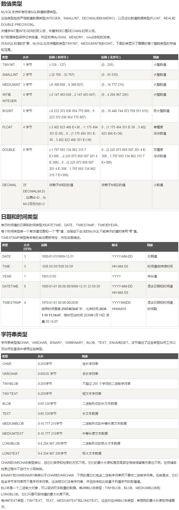

MySQL笔记
title: mysql
date: 2021-04-05 23:13:01
tags:
概念
DB: 数据库(database) 用于储存数据的"仓库"。它保存了一系列有组织的数据DBMS: 数据库管理系统(Database Management System)。又称为数据库管理软件，用于管理DB中的数据SQL: 结构化查询语言(Structure Query Language)。专门用来与数据库通信的语言
命令
1 | Mac: |
1 | windows: |
数值类型

评论